From a single bit pattern, to a 685-billion-parameter model
Quantization,
the inference
workhorse.
Quantization is the technique that touches every metric of LLM serving — time-to-first-token, inter-token latency, and throughput. It works two ways at once: fewer FLOPs in the compute-bound prefill, fewer bytes in the memory-bound decode. This walkthrough builds the entire technique from a single float, all the way to DeepSeek's FP8 tile-wise scheme.
each step compresses a different bottleneck on the roofline.
Most quantization explainers stop at the formulas. The interesting part is where the speedup actually comes from — and it is a different mechanism for the prefill matmul than it is for the decode matmul. We will derive both, with worked numbers, in this walkthrough.
Scroll, watch the dot climb.
↓
Three metrics, two mechanisms.
There are three numbers a serving engineer is paid to care about. Time to first token is the wall-clock between the user pressing send and the first token coming back — dominated by the prefill matmul. Inter-token latency is the wall-clock between subsequent tokens during generation — dominated by the decode step. Throughput is the total token rate you can serve across many requests in parallel.
Quantization improves all three. But — and this is the part most people miss — it improves prefill and decode for different reasons. Prefill is compute-bound; decode is memory-bound. Quantization touches both. The first half of this chapter is about reckoning with that distinction.
i · Why prefill is compute-bound — and how lower precision shortens it
A prefill matmul is roughly (tokens × d_model) @ (d_model × d_model) — a fat matrix multiplied by another fat matrix. The work scales as tokens × d_model², which is enormous for a long prompt. Per byte of data loaded from memory, we perform many FLOPs. The tensor cores stay saturated. The GPU is doing real work, not waiting.
The cost is in the multiply itself. An FP32 multiplier needs ~4× the transistors and energy of an FP16 multiplier, and ~16× the INT8 multiplier. Same silicon area can hold many more low-precision multipliers, so the peak throughput of a tensor core rises sharply as precision drops:
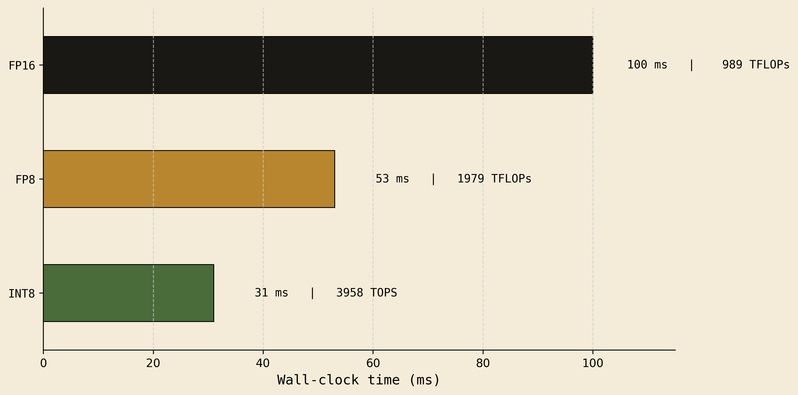
FP16 → FP8 cuts prefill time in half. INT8 cuts it by another ~40%. For long prompts (think 8k+ tokens), this is the difference between a snappy assistant and a sluggish one. Lower precision shortens TTFT because the matmul itself runs faster — same number of ops, cheaper ops.
ii · Why decode is memory-bound — and how fewer bytes shorten it
Decode is a completely different beast. We generate one token at a time. The matmul becomes (1 × d_model) @ (d_model × d_model) — a thin vector against a fat weight matrix. Now the arithmetic is tiny compared to the data: we drag the entire weight matrix from HBM through the SMs to multiply it by one row. Per FLOP we move a lot of bytes. The tensor cores are mostly idle; they're waiting on memory.
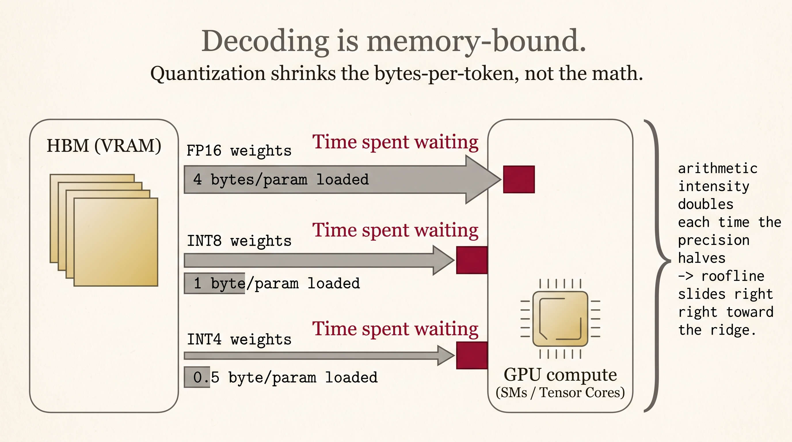
FP32: AI = 0.5 | FP16: AI = 1.0 | INT8: AI = 2.0 | INT4: AI = 4.0
Each halving of precision doubles the arithmetic intensity. The same operation slides rightward on the roofline plot, from "starving for data" toward "saturating compute." For autoregressive decode — the latency bottleneck of any serving system — INT4 can be 3-4× faster than FP16. Not because INT4 math is faster, but because we're loading 4× less data from memory.
The third metric — throughput — falls out for free. A 70B-parameter model in FP16 needs 140GB. Two H100s. In INT4, it's 35GB — fits on one H100, with room left over for a much larger batch. Less VRAM per request → more requests in parallel → higher throughput.
| Metric | Regime | How quantization helps |
|---|---|---|
| TTFT (prefill) | compute-bound | cheaper FLOP · tensor cores 2-4× faster at lower precision |
| ITL (decode) | memory-bandwidth-bound | fewer bytes loaded · arithmetic intensity doubles per halving |
| Throughput | VRAM-bound | smaller weight + KV footprint · larger batches fit |
How a single float is actually stored.
Most engineers memorize "sign, exponent, mantissa" and stop there. The intuition that actually matters for quantization is different. A float is just two things: a window on the number line, and an offset inside that window. The exponent picks the window. The mantissa picks the offset. The sign picks the side.
i · The 32-bit layout
ii · The number line lives in power-of-two windows
The number line is partitioned into windows like [0.5, 1], [1, 2], [2, 4], [4, 8], and so on. Each window doubles in width as you move away from zero. Every window contains the same number of representable mantissa positions — 2²³ ≈ 8.4M for FP32.
iii · Worked example — encode 6.1 in FP32
Step 1 — Sign
Step 2 — Which window?
window = [2², 2³]
raw exponent = 2
Step 3 — Apply the +127 bias
binary: 1000 0001
Step 4 — Offset inside [4, 8]
= 2.1 / 4 = 0.525
→ 52.5% of the way in
Step 5 — Mantissa bucket
bucket = 0.525 × 8,388,608
= 4,404,019
Step 6 — Final 32-bit pattern
M=0001 0000 1100 1100 1100 110
≈ 6.10000038
iv · Why on earth do we add 127?
The exponent field is 8 unsigned bits — it can only hold values 0 to 255. But we need negative exponents for tiny numbers (like 2⁻¹²⁶) and positive ones for huge numbers (like 2⁺¹²⁷). The trick: store actual_exponent + 127, so the unsigned field can span the entire signed range. This shift is the exponent bias.
2^(E−1) − 1.v · The two intuitions to lock in
Exponent → range
With E exponent bits you get 2^E − 2 usable windows (two reserved for zero/subnormals and infinity/NaN). More windows mean the number line extends further before it runs out.
FP32: 8 bits → 254 windows → ±3.4×10³⁸
FP16: 5 bits → 30 windows → ±65,504
BF16: 8 bits → 254 windows → ±3.4×10³⁸
FP8 E4M3: 4 bits → 14 windows → ±448
Mantissa → precision
Every window — tiny [0.5, 1] or massive [2¹²⁶, 2¹²⁷] — is divided into the same 2^M buckets. So absolute spacing worsens as numbers grow.
Window [0.5, 1] · 23 mantissa bits
→ spacing ≈ 6 × 10⁻⁸
Window [8, 16] · 23 mantissa bits
→ spacing ≈ 9.5 × 10⁻⁷ (16× coarser)
The format zoo.
Seven numeric formats matter in modern inference. The trade is always the same: spend bits on more windows (more range) or on more buckets per window (more precision). Below is the table you should keep open while reading any quantization paper.
| Format | Bits | Sign | Exp | Mant | Windows | Buckets/win | Range | Where it lives |
|---|---|---|---|---|---|---|---|---|
| FP32 | 32 | 1 | 8 | 23 | 254 | 8,388,608 | ±3.4e38 | Training master copy |
| FP16 | 16 | 1 | 5 | 10 | 30 | 1,024 | ±65,504 | Pre-Hopper inference default |
| BF16 | 16 | 1 | 8 | 7 | 254 | 128 | ±3.4e38 | Hopper, TPUs, MI300 training |
| FP8 E4M3 | 8 | 1 | 4 | 3 | 14 | 8 | ±448 | DeepSeek V3, Llama 3.1 FP8 |
| FP8 E5M2 | 8 | 1 | 5 | 2 | 30 | 4 | ±57,344 | FP8 training (gradients) |
| INT8 | 8 | 1 | — | — | — | 256 total | −128..127 | SmoothQuant, LLM.int8() |
| INT4 | 4 | 1 | — | — | — | 16 total | −8..7 | GPTQ, AWQ, GGUF |
i · BF16 is FP32 minus the precision, not minus the range
BF16 is one of the more elegant designs. It keeps FP32's eight exponent bits (and therefore FP32's enormous ±3.4×10³⁸ range), and sacrifices mantissa bits — only seven, down from FP32's twenty-three. For training, where you need to represent gradients across many orders of magnitude but don't need extreme precision per value, this is the right trade. Hopper, TPU, and MI300 all train in BF16.
ii · Why floating point beats integer for the same bit count
Integers space their representable values uniformly across the whole number line. Floats cluster them near zero. For a Gaussian-distributed weight matrix — exactly what a transformer ends up with — this is a huge advantage.
Symmetric quantization, on a single axis.
Here is the question quantization answers in its simplest form. Given a list of FP32 numbers, how do we squeeze them into INT8 — only 256 distinct integer codes — while losing as little information as possible? The simplest answer is symmetric quantization: pick a scale that maps the data's absolute max to the integer max, and let zero remain zero.
quantize: q = clamp(round(x / scale), −127, 127)
dequantize: x̂ = q · scale
The crucial visual: the FP32 values and the INT8 codes live on the same number line. There is no "FP axis above, INT axis below" — they share one ruler, with two scales on it.
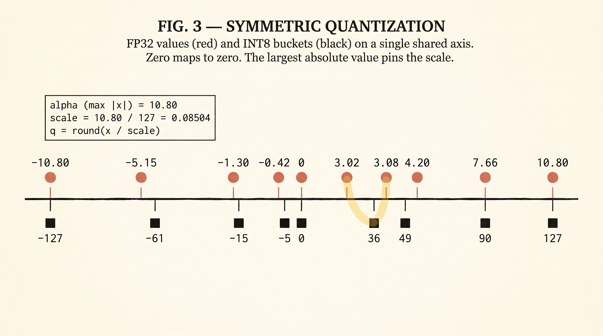
i · Walking through the eight-value example
Take this FP32 vector:
The absolute max is α = 10.80 (highlighted in gold). This sets scale = 10.80 / 127 = 0.08504. Every value is divided by the scale, rounded, and clamped to the range [−127, +127]:
| x (FP32) | x / scale | q (INT8) | x̂ = q · scale | error |x − x̂| |
|---|---|---|---|---|
| 3.08 | 36.2 | 36 | 3.061 | 0.019 |
| −0.42 | −4.9 | −5 | −0.425 | 0.005 |
| 10.80 | 127.0 | 127 | 10.800 | 0.000 ← pins the scale |
| −1.30 | −15.3 | −15 | −1.276 | 0.024 |
| 7.66 | 90.1 | 90 | 7.654 | 0.006 |
| 3.02 | 35.5 | 36 | 3.061 | 0.041 ← collision with 3.08 |
| −5.15 | −60.6 | −61 | −5.187 | 0.037 |
| 4.20 | 49.4 | 49 | 4.167 | 0.033 |
scale / 2 ≈ 0.043 — you can never be off by more than half a step. (2) The signs of the errors are uncorrelated, so over a long matmul (~thousands of multiply-adds per output element) the errors mostly cancel out. This is the statistical reason quantization works at all.Asymmetric quantization, with a shifted zero.
Symmetric quantization maps [−α, +α] to [−127, +127]. But what if the data is not symmetric around zero? Imagine a post-ReLU activation that is always ≥ 0, or a vector with min −5 and max +11. Then half of the integer range is wasted on values that will never appear. Asymmetric quantization adds a zero-point that shifts the whole map.
zero-point z = round(−128 − β / scale)
quantize: q = clamp(round(x / scale + z), −128, 127)
dequantize: x̂ = (q − z) · scale
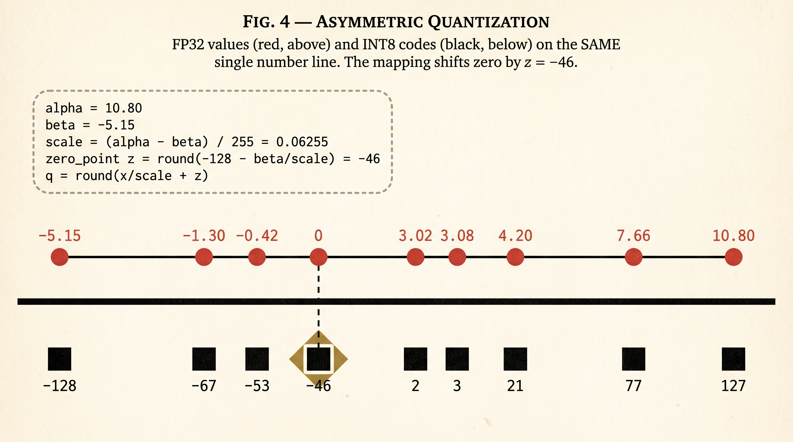
i · The same input vector, mapped asymmetrically
scale = 15.95 / 255 = 0.06255, z = −46
| x | x / scale | + z | q (INT8) | x̂ | error |
|---|---|---|---|---|---|
| 3.08 | 49.2 | 3.2 | 3 | 3.065 | 0.015 |
| −0.42 | −6.7 | −52.7 | −53 | −0.438 | 0.018 |
| 10.80 | 172.7 | 126.7 | 127 | 10.821 | 0.021 |
| −1.30 | −20.8 | −66.8 | −67 | −1.314 | 0.014 |
| 7.66 | 122.5 | 76.5 | 77 | 7.694 | 0.034 |
| 3.02 | 48.3 | 2.3 | 2 | 3.002 | 0.018 |
| −5.15 | −82.3 | −128.3 | −128 | −5.129 | 0.021 |
| 4.20 | 67.1 | 21.1 | 21 | 4.191 | 0.009 |
Symmetric · when to reach for it
- Data is roughly zero-centered (typical for weights)
- You want simpler matmul kernels — no zero-point bookkeeping
- One scalar per quantization group, faster
- Default for INT8 weight quantization
Mean error in our example: 0.021
Asymmetric · when to reach for it
- Data is offset (post-ReLU, post-softmax, KV cache)
- You can afford the extra zero-point arithmetic
- Tighter packing of an asymmetric range
- Common for activation quantization
Mean error in our example: 0.019
This is why production methods — GPTQ, AWQ, GGUF, and DeepSeek's tile-wise scheme — never use one scale per tensor. They use small groups of values that share a single scale. We'll see exactly how that works in § VII and § VIII.
The two PTQ schemes — and the accumulator question.
Now we know how to map floats to integers. The harder question is: where in the forward pass do we quantize, and where do we dequantize? Two patterns dominate, and they look almost identical from a distance. They are not. They speed up inference through different mechanisms.
i · Before we go further — what one layer actually does
To make sense of Schemes 1 and 2 we need a shared mental picture of what a single transformer linear layer is computing. Zoom in on one layer of an LLM. It takes an input vector x of length d_model and multiplies it by a weight matrix W of shape d_model × d_out. The output y is a vector of length d_out, where each output element is a dot product — a sum of multiplications.
Hold that picture in mind. Every Scheme below is just choosing a precision for the two coloured columns (input and weight) and for the green accumulator at the bottom. Everything else is plumbing.
ii · Scheme 1 — Weight-only (GPTQ, AWQ, NF4)
Weights are quantized once, offline, and stored quantized in HBM. Right before each layer's matmul, the weights are dequantized back to FP16. The matmul itself runs in FP16. Activations are never quantized — they stay in FP16 throughout.
So far we have only specified where in the forward pass the quantization happens. We have not said how the quantized weight values are actually chosen. The two most influential weight-only quantization algorithms — GPTQ and AWQ — answer that question with two very different tricks. Both fit inside Scheme 1 above.
iii · GPTQ — quantize, then redistribute the error
GPTQ stands for Generative Pre-trained Transformer Quantization (Frantar et al., 2022). The full name comes from the paper title "Accurate Post-Training Quantization for Generative Pre-Trained Transformers", and the algorithm is a refinement of an older method called OBS / Optimal Brain Surgeon.
Let's set up a concrete example. A linear layer in a transformer computes:
where w = [w₁, w₂, w₃] are the weights we want to quantize, and x = [x₁, x₂, x₃] are the activations flowing in. The thing we actually care about is the output y — we don't care whether each individual weight is stored exactly, as long as y comes out right.
To keep the picture simple, take a specific weight vector w = [1.34, 0.34, 0.34] and pretend the activations are x = [1, 1, 1] (so the output is just y = 1.34 + 0.34 + 0.34 = 2.02). The math works the same when the activations aren't all 1 — they just rescale how much each weight's quantization error contributes to the output.
The catch: we can only store each weight as a multiple of 0.20 (the INT4 grid we're stuck with). Naively, we round each one to its nearest multiple of 0.20 — but the errors all add up and we lose 0.18 from the output. GPTQ does something smarter.
It quantizes the weights one at a time, keeping a running "ledger" of how far off the output is. After each weight is stored, it looks at the ledger and adjusts the next weight's pre-rounding value to push the ledger back toward zero. If we overshot, it subtracts from the next weight before rounding; if we undershot, it adds. The rounding itself is plain old "round to nearest grid point" — no magic, just nearest-grid.
Here is the analogy first as a group project, then the actual numbers underneath.
Now the same picture as a clean running-balance bar:
Now the same picture with the actual numbers, drawn as a running-balance bar:
That is GPTQ in one picture: never lose sight of the cumulative output error, and pre-adjust the next weight to cancel it. GPTQ is more expensive than naive quantization (you process weights sequentially), but it runs once offline and produces a much higher-quality INT4 model that you then deploy under Scheme 1.
One more level of detail — where the Hessian comes in
The version above pushes the full running error into the immediate next weight. In real GPTQ this isn't quite what happens — the running error is spread across all the not-yet-quantized weights, and how much each one absorbs depends on its sensitivity.
The picture: imagine those same three teammates, but now each one has a different "flexibility budget" — some are critical to the project (small changes in their stored value really do change the output a lot), others are flexible (a small change barely matters). When P1 overshoots by 0.06, that 0.06 of correction gets divided up among P2 and P3 in proportion to their flexibility: the flexible teammates absorb more of the correction, the rigid ones absorb less. The inverse Hessian in the GPTQ paper is exactly the formula that quantifies this per-weight flexibility budget.
For the rest of this section we'll keep using the simpler "push all the error into the next weight" picture — the running-balance intuition is what matters. The Hessian piece is just a refinement that decides how to distribute that correction more carefully across multiple downstream weights.
iv · AWQ — protect the channels that activations care about
AWQ stands for Activation-aware Weight Quantization (Lin et al., 2023). It targets the same problem as GPTQ but solves it from a completely different angle. AWQ skips the Hessian and the per-weight reasoning. Instead, it asks: given that some activation channels are way bigger than others, which weight columns matter most?
The observation: a weight column whose corresponding activation channel is large contributes a lot to the output. A small quantization error in that weight column gets multiplied by a big activation and shows up loudly at the output. So those weight columns deserve more precision than the rest. AWQ rescales the important columns up before quantization, and rescales the matching activations down at inference — the math cancels, but the important weights now occupy a finer slice of the INT4 grid.
|x| across feature channels. A few channels (c₃, c₆ here) are much larger than the rest — these are the channels whose weight columns matter most. Step 2: before quantization, scale up those columns by some factor s (e.g. 2×), so their finer-grained values now span more of the INT4 grid. Step 3: at inference, divide the corresponding activation entries by s. The matmul math cancels, but the important weight columns are now quantized at higher effective precision. No Hessian, no sequential processing — just a per-channel scaling and one round of normal INT4 quantization.Why "scale up" gives finer resolution — the magnifying-glass picture
Forget the math word "resolution" for a second. Here is the everyday version of what AWQ does.
Imagine a coarse ruler with marks every 0.20 inches. You want to measure a tiny object, only 0.06 inches wide. The ruler can't see it — the closest mark is "0", so you record "0 inches." The object disappeared.
Trick: put a magnifying glass on the object that makes it look 4× bigger. Now it appears as 0.24 inches — the ruler can see that, and records "0.20 inches." Later, when you go back to read your measurement, you remember the magnifying glass was 4×, so you divide by 4: 0.20 / 4 = 0.05. Very close to the original 0.06. The tiny object is no longer invisible.
Here is the analogy as a picture, then the actual numbers underneath.
Now the same idea, in the actual INT4 numbers:
The key idea in one sentence: the ruler stays the same, but by magnifying the weight 4× before measurement and shrinking the result 4× when reading it back, every old grid point now corresponds to a value four times smaller in the original weight space. The matmul output is unchanged because we divide the activation by 4 at the same time — but the tiny important weight stops being invisible.
GPTQ in one line
Spend offline compute to make each weight's quantization error known and compensate for it in the weights that haven't been quantized yet. Heavier offline cost, very high quality.
AWQ in one line
Notice which channels the activations care about. Give those weight columns more INT4 resolution by rescaling them, and cancel the rescaling on the activation side at inference. Cheap, simple, very competitive.
Both methods produce INT4 (or INT3) weight checkpoints that deploy under Scheme 1 — the weights live quantized in HBM and are dequantized on-the-fly before each matmul. The choice between GPTQ and AWQ in practice usually comes down to whether you have the offline budget to run the Hessian-based optimization or you want a one-pass calibration.
How GPTQ and AWQ both sit on top of per-group quantization
It's easy to confuse two different choices here. Earlier we talked about per-tensor vs per-channel vs per-group quantization — that is one axis (granularity, i.e. how many scales you store). GPTQ and AWQ are a different axis (algorithm, i.e. how the scales and quantized values are computed). The two axes are independent.
Crucially, GPTQ and AWQ both pick the same base granularity — per-group quantization with group_size = 128 along the input dimension. They don't disagree about granularity at all. They disagree about what to do on top of that shared base.
What does the grouping look like on the weight matrix?
Take a real Llama-3 linear layer: weight matrix W of shape (4096 × 4096). DeepSeek's scheme tiled this into 128 × 128 squares (each square = one scale). GPTQ and AWQ tile the same matrix differently: into 1 × 128 horizontal stripes (each stripe = one row's worth of 128 consecutive weights = one scale).
v · Scheme 2 — Quantized matmul / W8A8 (SmoothQuant, DeepSeek V3)
Here, both weights and activations are quantized. The matmul itself runs in INT8 (or FP8) on the tensor cores. The product is accumulated into a wider register, then dequantized back to FP16 / BF16 before being passed to the next layer.
vi · Why the accumulator must be wider than the operands
This is the detail every junior engineer trips on. INT8 × INT8 multiplied together can reach 127 × 127 = 16,129 — already past the INT8 range. And we have to sum d_model of those (typically 4096) per output element of the matmul. Worst-case dot product: 4096 × 16,129 ≈ 6.6 × 10⁷. Vastly past INT16 (32,767) and comfortably within INT32 (2.1 × 10⁹).
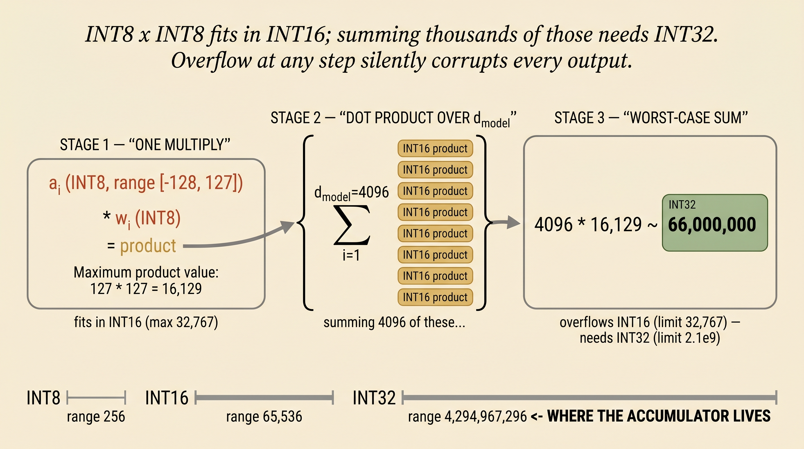
vii · The two schemes, side by side
| Scheme 1 · Weight-only | Scheme 2 · W8A8 / FP8 | |
|---|---|---|
| Weights stored as | INT4 / INT8 | INT8 / FP8 |
| Activations | Stay FP16 throughout | Quantized to INT8 / FP8 dynamically |
| Matmul precision | FP16 | INT8 / FP8 (accumulate FP32/INT32) |
| Dequantize happens | before matmul | after matmul |
| Speedup source | Memory bandwidth only | Bandwidth + faster math |
| Best for | Single-user decode | Prefill + high-batch serving |
| Typical bit budget | 4-bit (GPTQ, AWQ, NF4) | 8-bit (SmoothQuant, DeepSeek FP8) |
Weights vs activations — and the Dettmers result.
Weights and activations look superficially similar — they're both matrices. They are completely different objects from a quantization perspective. Weights are static: trained, frozen, identical for every request. Activations are dynamic: they depend on what the user typed, and they have a pathological property that we have to design around.
Weights · static
- Known offline, before deployment
- Quantize once, save, load forever
- Stored quantized on disk and in HBM
- You can spend hours optimizing the scales (GPTQ, AWQ)
Activations · dynamic
- Different for every input, every token, every layer
- Outliers appear unpredictably along specific channels
- Either compute scale on-the-fly (dynamic) or freeze a calibrated scale (static)
i · The Dettmers result — outliers are channel-structured
In 2022, Tim Dettmers and collaborators published LLM.int8(), where they noticed something specific about how outliers behave in transformer activations. Outliers are not random. They concentrate along a small number of specific feature channels — usually fewer than 6% of the model's hidden dimensions — and the same channels carry outliers across every token.
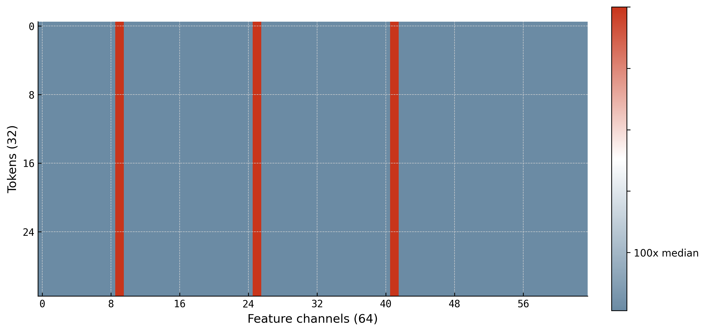
Why does this matter? Because if you quantize an activation matrix with one scale per tensor, those outlier channels set the scale, and every other channel gets crushed into a tiny fraction of the integer range. One outlier ruins the precision of 16,000 normal values.
The fix is the granularity of the scale. Instead of one scale per tensor, give each group of 128 channels its own scale. Then the outlier-bearing channels live in their own group, the scale of that group is large enough to fit them, and the other groups can use much smaller scales — preserving their precision. This is exactly why DeepSeek and SmoothQuant and LLM.int8() all converge on per-channel-tile granularity for activations.
ii · For activations: dynamic vs static quantization
Given that activation distributions change every input, we have two practical choices. We can compute the scale fresh, every layer, every forward pass — that's dynamic. Or we can pre-compute a scale on a calibration dataset and freeze it forever — that's static.
Dynamic
For every input, observe the activation tensor's min / max / abs-max at every layer, derive scale and zero-point fresh, quantize.
a = [2.10, −0.85, 4.33, ...]
scale = 0.0295
Input "Goodbye":
a' = [0.50, 6.20, −1.10, ...]
scale = 0.0286 (different!)
- Pro · always optimal scale
- Con · small per-layer reduction cost
Static (calibrated)
Before deployment, run ~512 representative samples, record the activation range at every layer, pick a global scale per layer, freeze it.
β = −4.50, α = 8.20
scale = 0.0498 (frozen)
At inference, scale is a constant.
⚠ If real input has 9.50 → clipped.
- Pro · zero per-token overhead
- Con · unseen ranges get clipped
| Dynamic | Static | |
|---|---|---|
| When is scale chosen? | Every layer, every input | Once, on calibration data |
| Accuracy | Higher (always optimal) | Lower (clipping risk) |
| Latency overhead | Small extra reduction per layer | None — pure lookup |
| Best for | Server-side LLM serving | Edge / mobile / latency-critical |
DeepSeek V3 — FP8 in production, at 685B parameters.
DeepSeek V3 is the cleanest large-scale example of Scheme 2 we have. They quantize both weights and activations to FP8 (specifically E4M3), run the matmul on Hopper tensor cores, accumulate in FP32, and cast back to BF16 between layers. Three design decisions make the whole thing work: FP8 over INT8, tile-wise for activations, and block-wise for weights.
i · Why FP8 instead of INT8?
The Dettmers picture (Fig. 20) showed why activation values aren't uniformly distributed — they cluster densely near zero with heavy tails. FP8's log-spaced grid puts more representable values near zero (Fig. 7), exactly where the bulk of the distribution lives. INT8 wastes representable values out in the sparsely-populated tails.
With tile-wise scaling on top, FP8 typically matches BF16 quality at half the bytes. INT8 by itself, at this granularity, usually can't.
ii · The asymmetry of granularity
Activations have channel-structured outliers. Weights do not. So we apply different scaling granularities to each:
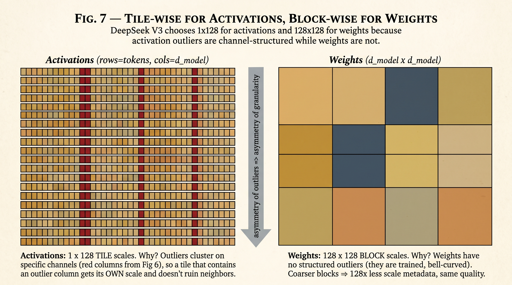
The geometric intuition: a tile-wise scale for activations isolates the outlier channels. Two tiles in the same token-row but in different channel-groups can have wildly different scales. The block-wise scale for weights doesn't need that — weights are bell-curved everywhere, so a single scale across a 128×128 chunk is fine.
iii · The full pipeline
iv · The numbers that made the headlines
GGUF — quantization for the laptop.
DeepSeek's FP8 scheme assumes you have H100s. Most people don't. Most people have one consumer GPU with maybe 24 GB of VRAM, and they want to run a 70-billion-parameter model on it. GGUF is the answer. It is two things at once: a quantization scheme that squeezes every last bit out of the storage budget, and a file format that lets a single model file run on any mix of GPU and CPU.
i · The starting point — Q4_0, one scale per block of 32
The most naive way to quantize a weight matrix to INT4 is: split the weights into blocks of 32, find the absolute max in each block, derive a per-block scale, quantize each weight to a 4-bit code, and store the scale as an FP16 alongside the block. Naming convention: Q4_0.
32 × 4 bits (codes) + 1 × 16 bits (FP16 scale) = 128 + 16 = 144 bits per block
cost per weight: 144 / 32 = 4.5 bits/weight
4.5 bits/weight for INT4 — the half-bit overhead is the per-block scale. You can't cut the block size (smaller blocks = more scales = more overhead). You can't shrink the scale below FP16 without losing range. The naive scheme bottoms out here.
ii · The K-quant trick — quantize the scales themselves
The breakthrough that GGUF k-quants introduce is to notice: we have a lot of scales, and they're floats, so why not quantize them too? Bundle 8 sub-blocks together into one "super-block" of 256 weights. Each sub-block still has its own scale, but now those 8 sub-scales are quantized to INT8, and a single FP16 super-scale (shared across all 8) gives them their range back.
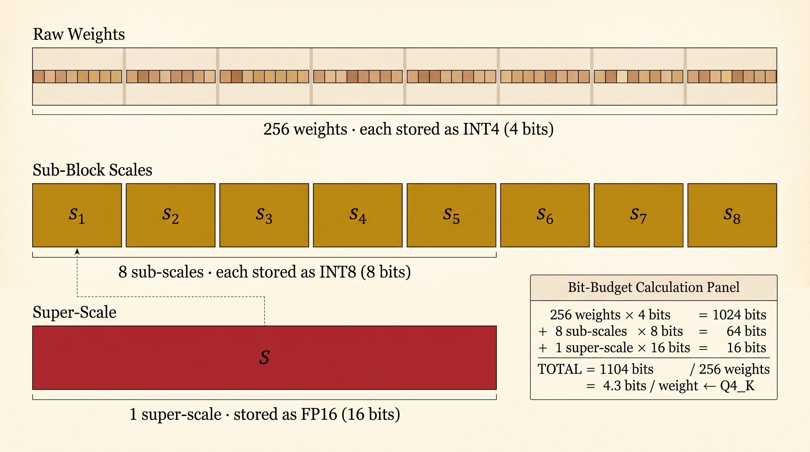
The bit-budget arithmetic is the whole point. Let's redo it:
256 × 4 bits (codes) + 8 × 8 bits (sub-scales) + 1 × 16 bits (super-scale)
= 1024 + 64 + 16 = 1104 bits per super-block
cost per weight: 1104 / 256 = 4.3 bits/weight ← Q4_K
0.2 bits/weight saved compared to Q4_0. On a 70B-parameter model, 0.2 bits × 70 × 10⁹ ÷ 8 = 1.75 GB. Not nothing — and the accuracy is actually better than Q4_0, because the two-level scaling reduces quantization error in blocks with mixed-magnitude weights.
iii · The numerical walkthrough — 256 weights, end to end
The diagram is nice. Now let's do it with actual numbers. We will take 256 real-looking weight values, run them through the entire Q4_K pipeline (sub-block quantize, sub-scales quantize, super-scale store), and account for every bit at the end.
Step 1 — One sub-block of 32 weights
Here is sub-block #1 — 32 FP32 weights drawn from a typical transformer linear layer:
0.18, 0.62, −0.09, 0.33, 0.27, −0.05, 0.41, 0.15,
−0.38, 0.21, 0.09, −0.48, 0.04, 0.55, −0.13, 0.31,
−0.07, 0.42, 0.18, −0.26, 0.14, 0.37, −0.11, 0.29 ]
The absolute-max in this block is α₁ = 0.71 (highlighted in red above). With symmetric INT4 quantization the integer range is [−7, +7], so:
Quantize the first eight weights of the block (the full 32 follow the same pattern):
| w (FP32) | w / scale₁ | q (INT4) | ŵ = q · scale₁ | error |
|---|---|---|---|---|
| 0.12 | 1.18 | 1 | 0.101 | 0.019 |
| −0.34 | −3.35 | −3 | −0.304 | 0.036 |
| 0.08 | 0.79 | 1 | 0.101 | 0.021 |
| 0.51 | 5.03 | 5 | 0.507 | 0.003 |
| −0.22 | −2.17 | −2 | −0.203 | 0.017 |
| 0.03 | 0.30 | 0 | 0.000 | 0.030 |
| 0.45 | 4.44 | 4 | 0.406 | 0.044 |
| −0.71 | −7.00 | −7 | −0.710 | 0.000 ← pins scale |
So sub-block #1 produces 32 INT4 codes (4 bits each) plus one FP32 scale (0.10143) — for now. Carry that scale forward.
Step 2 — Repeat for all 8 sub-blocks
The same procedure on the other seven sub-blocks gives us seven more scales. Concretely, suppose the absolute-maxes across the eight sub-blocks come out as:
| sub-block | αᵢ = max |w| | sᵢ = αᵢ / 7 (FP32) |
|---|---|---|
| 1 | 0.71 | 0.10143 |
| 2 | 0.50 | 0.07143 |
| 3 | 0.60 | 0.08571 |
| 4 | 0.30 | 0.04286 |
| 5 | 0.88 | 0.12571 ← largest |
| 6 | 0.45 | 0.06429 |
| 7 | 0.63 | 0.09000 |
| 8 | 0.55 | 0.07857 |
We now have eight FP32 scales. If we just stored them in FP16 we'd be back to the Q4_0 cost (4.5 bits/weight). The K-quant trick is to compress these scales themselves.
Step 3 — Quantize the scales: super-scale + INT8 sub-scales
Find the maximum of the eight sub-scales — this becomes our super-scale:
Now each sub-scale is quantized against S using INT8 (range 0..127, since scales are positive):
| i | sᵢ (FP32) | sᵢ / S × 127 | qᵢ (INT8) | ŝᵢ = qᵢ · S / 127 | error |
|---|---|---|---|---|---|
| 1 | 0.10143 | 102.47 | 102 | 0.10097 | 0.00046 |
| 2 | 0.07143 | 72.16 | 72 | 0.07126 | 0.00017 |
| 3 | 0.08571 | 86.60 | 87 | 0.08610 | 0.00039 |
| 4 | 0.04286 | 43.30 | 43 | 0.04256 | 0.00030 |
| 5 | 0.12571 | 127.00 | 127 | 0.12571 | 0.00000 ← pins S |
| 6 | 0.06429 | 64.95 | 65 | 0.06435 | 0.00006 |
| 7 | 0.09000 | 90.90 | 91 | 0.09008 | 0.00008 |
| 8 | 0.07857 | 79.36 | 79 | 0.07820 | 0.00037 |
The sub-scale errors are tiny — three to four decimal places — because INT8 against a tightly-fit super-scale has plenty of resolution. When inference time comes, dequantization is two multiplies:
recover wᵢⱼ: ŵᵢⱼ = (INT4 code)ᵢⱼ × ŝᵢ
Step 4 — The bit budget, fully accounted
Now we can count every single bit stored on disk for this super-block of 256 weights:
| What is stored | How many | Each is | Total bits |
|---|---|---|---|
| INT4 weight codes | 256 | 4 bits | 1024 |
| INT8 sub-scale codes (q₁..q₈) | 8 | 8 bits | 64 |
| FP16 super-scale (S) | 1 | 16 bits | 16 |
| TOTAL | 1104 bits |
That's the entire scheme on real numbers. The win over Q4_0 (4.5 bits/weight, one FP16 scale per block-of-32) is the 0.2 bits saved by amortising scales across larger super-blocks and compressing the sub-scales themselves. On a 70B-parameter model that 0.2 bits/weight × 70 × 10⁹ ÷ 8 = 1.75 GB less to store and load.
iv · Decoding the Q4_K_M name
So Q4_K_M means: roughly 4 bits per weight, K-quant scheme, medium variant. Q5_K_M is the same trick at 5 bits. Q2_K pushes all the way down to about 2.5 bits/weight before quality starts to fall apart.
v · The bit budget across formats
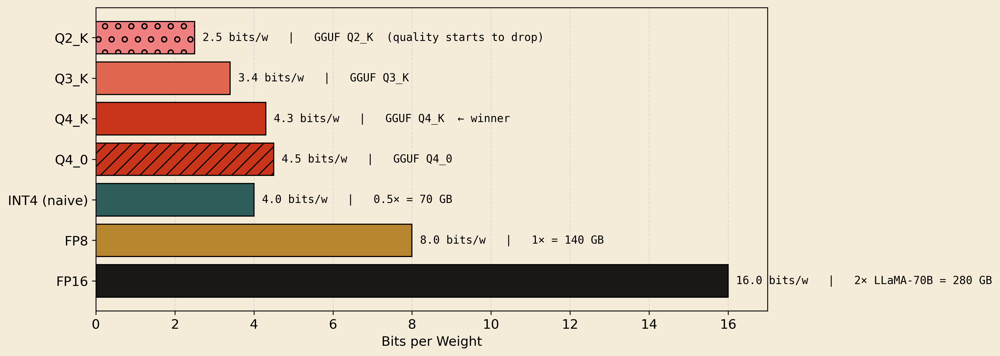
vi · The killer feature — GPU + CPU offload
Here is where GGUF stops being just a quantization scheme and becomes something else entirely. A transformer is a stack of independent layers. In the GGUF file format, each layer's weights are stored as a self-contained block that can be loaded onto either GPU memory or CPU RAM at runtime. The runtime decides per-layer where each one goes.
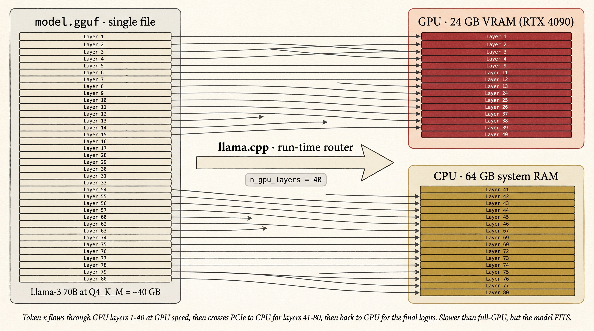
n_gpu_layers = 40, llama.cpp loads the first 40 layers on the GPU and the remaining 40 on the CPU. The token's hidden state crosses PCIe between them. Slower than full-GPU, but the model fits.vii · So where does llama.cpp fit?
This is the source of the most common confusion. llama.cpp is the runtime — the C++ inference engine written by Georgi Gerganov. GGUF is the file format it reads. K-quants are the quantization algorithms it implements. All three were developed together, and people use the names interchangeably, but they're three distinct things:
| Name | What it is | What it does |
|---|---|---|
| llama.cpp | The runtime (C++ binary) | Reads the model file, executes the transformer, generates tokens, manages GPU/CPU memory |
| GGUF | The file format on disk | One self-contained file holding weights (quantized), metadata, tokenizer, layer layout |
| K-quants | The quantization scheme | The Q4_K, Q3_K, Q2_K etc. two-level encodings inside the GGUF file |
| Ollama / LM Studio | UI wrappers over llama.cpp | Friendlier interfaces, model management, server APIs — the engine underneath is still llama.cpp |
.gguf file (containing K-quant-encoded weights) and is now generating tokens by routing layers across the user's GPU and CPU. Four layers of abstraction, one ecosystem.Quantization-aware training — teaching the network to be robust.
Every quantization scheme we've seen so far is post-training: train the model in FP32 or BF16, then quantize after the fact and hope it survives. For aggressive bit budgets (INT4 and below) this hope wears thin. Quantization-aware training (QAT) takes a different approach: train the model with quantization noise baked into the forward pass, so the network learns to be robust to it.
i · Where W and x come from — anchor in an LLM layer
Before we get into "fake quantization", a quick reminder of where the actors come from. The whole story of QAT plays out inside one transformer linear layer — exactly the same setup we drew in § VI, except now we're training instead of just running inference.
ii · Why post-training breaks at low bit budgets
Standard training finds weights that minimize loss in continuous FP32 space. That optimum can sit in a narrow minimum — a sharp valley where moving a weight by even a tiny amount makes the loss jump. Quantization moves every weight by up to scale / 2, and in a narrow minimum, those small shifts throw the model off the floor of the valley and onto the steep walls. Accuracy collapses.
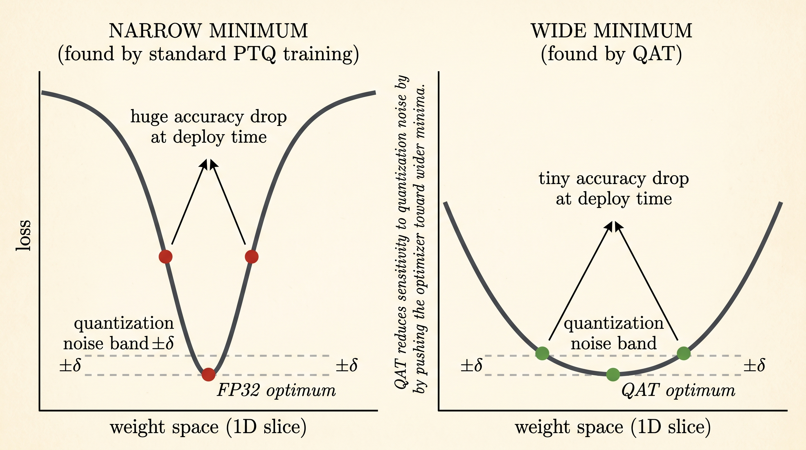
iii · Fake quantization in the forward pass
The trick is mechanically simple. Insert a "fake quantization" operation into the forward pass at the points where quantization will happen at inference time — typically right before each layer's matmul. Fake quantization does quantize → dequantize in one step. The weight is rounded to the quantization grid, then immediately converted back to FP32. The dtype stays FP32 so gradients can flow, but the value is constrained to land on a grid point.
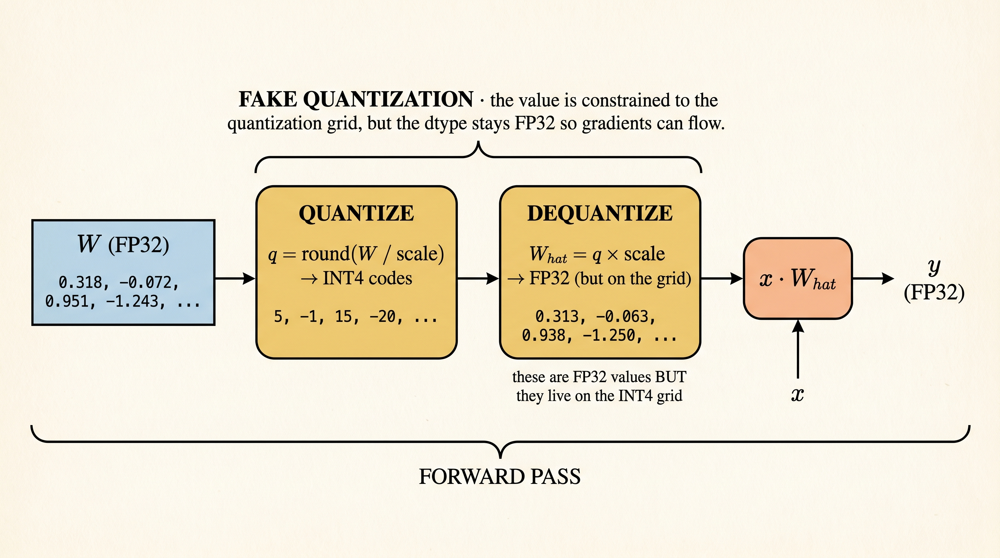
x · Ŵ proceeds normally. The network sees, every step, the exact quantization noise it will face at deployment.Why is this called fake quantization? Because the matmul is still FP32 — we never actually do INT4 arithmetic during training. We just constrain the FP32 values to a discrete grid. The "real" quantization (INT4 storage + INT4 math) happens only at deployment.
iv · The backward pass — and the straight-through trick
There is a serious problem with the forward pass we just described: round() is a staircase. Between steps, it's flat. At each step, it jumps discontinuously. Backpropagation needs a derivative — and the derivative of a staircase is the wrong thing for training.
round() kills the gradient. Left: the function itself is a staircase — each tread is perfectly flat, so the slope is zero in between integer boundaries. Right: the derivative is therefore zero everywhere except at the jumps, where it is an infinite Dirac spike. In a real training step, the chance of W sitting exactly on a jump is zero — so the gradient is, in practice, simply zero. There is nothing for SGD to follow.The fix is the straight-through estimator (STE). During the backward pass, we pretend the quantization operation isn't there. The gradient flows through it as if it were the identity function — derivative = 1, everywhere. Mathematically:
Backward: ∂L/∂W ← ∂L/∂Ŵ (treat quant as identity)
The biased gradient sounds heretical, but it works beautifully in practice. Because the quantization step is small (typically scale / 2), and because rounding is unbiased on average over many weights, the gradient direction is close enough to correct. The optimizer keeps moving the weight in continuous space, and only when the weight crosses a grid boundary does the quantized output actually change.
v · Why this finds wider minima
This is the punchline. Because the loss function the network is trained against includes the quantization noise, the optimizer is implicitly pushed toward weights where that noise doesn't hurt — i.e., weights at the bottom of wide minima. Quantization noise tilts a narrow valley into a high loss; QAT can feel that tilt and walk to a wider valley where the tilt doesn't matter.
The result: a model that, when finally deployed in INT4, takes a tiny accuracy hit (sometimes none at all), compared to the large hit that pure post-training INT4 would incur. For details on the optimization theory — gradient flow through STE, why convergence is preserved, the connection to noise-injection regularization — see the surveys referenced below.
Squeezing the KV cache — TurboQuant, one picture at a time.
We have been compressing weights. The KV cache is the other giant chunk of memory in LLM serving — at 32K context it can be 10–20 GB on top of the weights — and people want to compress it as aggressively. But the cache has one wrinkle that weights don't: it is consumed inside attention to compute dot products. So we have to compress in a way that those dot products still come out right. This section is the whole idea, told in three pictures.
i · Where does the dot product come from?
Recall what attention does. For every new token, the model computes a query vector Q. The KV cache stores a key vector K for every past token. The attention score for past token t is simply:
Stack all the scores, softmax them, and that's the attention weighting. So every attention score is a dot product between a fresh query and a cached key. If we quantize the cached keys, those dot products are what we have to keep accurate.
ii · The bias problem — why naive quantization shrinks dot products
Start with two cached key vectors x and y (just labelled this way for the math; in attention one of them is really Q). Quantize each one with a coarse MSE quantizer (~3 bits). Each gets split into a quantized part q (what we store) and a residual r (what got rounded away):
Now the true dot product expands into four pieces:
↑ what we have ↑ what is missing — and biased low
Here is the same thing on real numbers. Say x and y are 4-dim vectors with true dot product 2.50:
2.50. Quantizing each one splits it into a "kept" piece q (blue) and a "rounded away" residual r (gold). The true dot product is the sum of four cross-terms; if we only store the q parts, we get 2.250 — a 10% bias. The missing 0.250 lives in the three gold cross-terms. TurboQuant's job is to recover most of that missing piece using just one extra bit per coordinate.iii · Where does the extra 1 bit come from?
Good question. We are not going to store the residual itself — that would defeat the compression. We are going to store a single yes/no fact about it. That yes/no fact is the 1 bit.
The fact is: which side of a random line is the residual on?
g·r. Its sign tells us which side r is on. That sign — just +1 or −1 — is the 1 bit we store. We throw away the magnitude entirely; we keep only the side.So the 1 bit is literally the answer to a yes/no question: "is the residual on the same side as the random direction g?" One bit, one yes/no. That is the whole storage cost.
iv · How storing one bit per residual helps
You might (rightly) ask: "one bit per coordinate sounds like almost no information — how does that help recover the dot product?"
The answer is that the question gets asked many times, with many different random directions — and the question is asked once per dimension of the residual vector. So if the cached key has d = 128 coordinates, we pick 128 random directions, ask the side-of-the-line question 128 times, and end up storing 128 sign bits. That is the "1 bit per coordinate" we have been counting: one bit, one random direction, per dimension of the key vector.
Each random direction is one yes/no question. Together those 128 answers give a good estimate of how the two residuals are oriented relative to each other — and that orientation is exactly what we need to reconstruct ⟨rₓ, rᵧ⟩.
+1 here, meaning "same side") is a single noisy vote about how the two residuals are oriented. Centre: repeat with many random directions; each one is one more yes/no vote. Right: average all the votes. Vote-average ≈ orientation between rₓ and rᵧ, and multiplied by the stored norms ‖rₓ‖, ‖rᵧ‖ gives back the residual dot product ⟨rₓ, rᵧ⟩. One bit per question; many questions; one good answer.That is the whole 1-bit story. The bit is "which side of a random line". The bits get useful when you ask the same question with many different random lines and average. Two cached residuals that point in similar directions will tend to land on the same side most of the time — and that "same-side rate" is what gets you back the missing piece of the dot product.
iv · How the dot product gets reconstructed at attention time
So when the model wants Q · Kₜ for a cached token, here is what actually runs:
2.250 — biased low. Part 2 (averaging the sign-bit products and scaling by the stored norms) recovers about 0.250 — the residual piece. Sum: 2.500. The attention score the network sees is the same as if we had kept everything in FP16, even though we are only spending 4 bits per coordinate.v · Where this lands inside an LLM
Concretely, for a Llama-3-70B-class model running at 32K context:
The chain in plain English: smaller KV cache → more requests fit in VRAM at once → higher serving throughput. The reason it doesn't hurt quality is that the dot products driving attention come out right — Part 1 captures the bulk, Part 2 recovers the bias-correcting piece, and the network sees the same softmax inputs it would have seen in FP16.